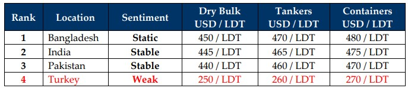

GMS Week 18 – BUMBLING RIDE!
in Weekly Demolition Reports 05/05/2025

Despite Trumpian-economics reversing course on nearly all executive trade actions and decisions within a few weeks of world economies collapsing and retaliatory tariffs to recent U.S. trade policies has seen a growing number of countries taking an opposing stance against this regime and has resulted in global trade being severely affected as major ports across American coastlines are slowly turning empty. And as inflation starts to slowly ramp up across the world, America on the other hand is gradually heading for a recession as the American economy shrank through Q1 and nothing has shown this more glaringly than the performance of the U.S. Dollar this week, where even though it has weakened against some recycling nation currencies, it did report depreciations against others.
The Baltic Exchange Dry Index too reported increases this week as trade starts to shift around the world and global economies hash out fresh trade agreements without the United States, causing freight rates to report minor improvements this week even though overall trading activity seems to be far lower. Notwithstanding, the biggest hammer of them all fell on the price of oil where on the back of plummeting energy demands and inconsistent policies and announcements of potential sanctions amidst Russian aggression against Ukraine saw futures plummet by 1.6% down to USD 58.29/barrel. Local steel plate prices also seem to be taking quite a hit as flatlining seems to be theme of the week across most sub-continent ship recycling markets and even China, where steel trade seems to have certainly taken a hit causing steel prices to freeze.
On the various ship recycling fronts, a shaky last few weeks finally settled this week with news that NOCs (No Objection Certificates) on incoming vessels in Bangladesh were finally being granted after a month-long hiatus whilst inspections from various government departments were being conducted to ensure that ongoing HKC yard upgrades reported by recyclers were in fact on track. Aside from the 7 HKC yards now approved in Chattogram, there is a list of about 20 yards waiting to gain HKC accreditation and these yards are reportedly at disproportionate stages of their own upgrades, which drove this market into a state of stasis whilst ongoing inspections and approvals worked themselves out, resulting in minimal sales and deliveries into Bangladesh of late, as a descending lull on activity shifted focus of ship owners / cash buyers on to competing markets in Pakistan and India. However, with political tensions now on the rise between Pakistan and India on the back of a terrorist attack in Kashmir’s Pahalgam city that resulted in the unfortunate death of 26 souls and has resulted in an increased military buildup along the border between each country, amidst a dangerous escalation in rhetoric that seems to be heading towards an armed conflict / war.
Overall, as tonnage scarcities & shaky fundamentals result in ship recycling activity being dragged through a bumbling backseat across sub-continent backroads for another week, particularly as global markets struggle to recover (and negotiate) following the sharp shock of the Trump’s tariff reforms, is keeping shipping markets propped up depriving recyclers of viable candidates for another week. Prices and demand, however, remain relatively unchanged from last week, other than a heightened sense of caution amongst ship recyclers who are still on the lookout for tonnage.

📄 Download PDF: Ship-recycling-market-insight-Week-18-05-02-2025-Bumbling_Ride-1746403441.pdfSource: GMS,Inc. https://www.gmsinc.net/gms_new/index.php/web
 Translate
Translate{kind=link}